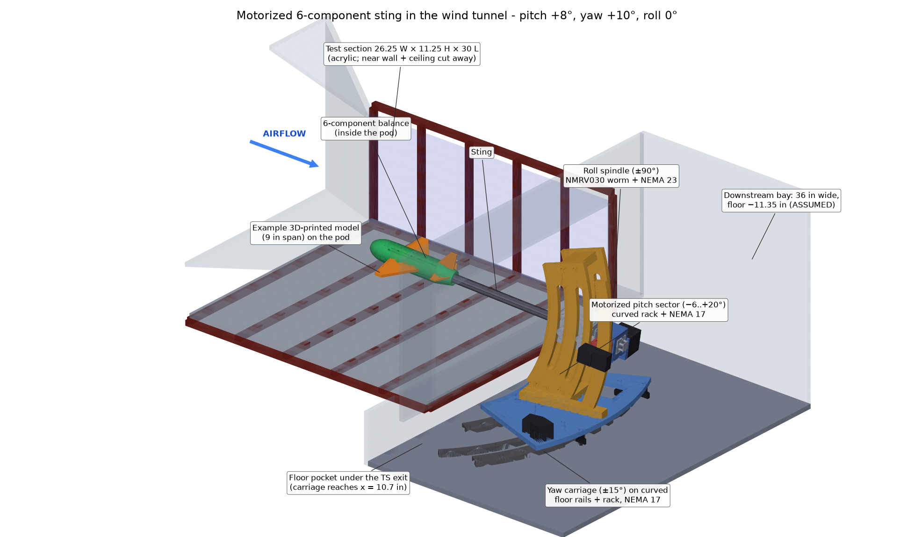
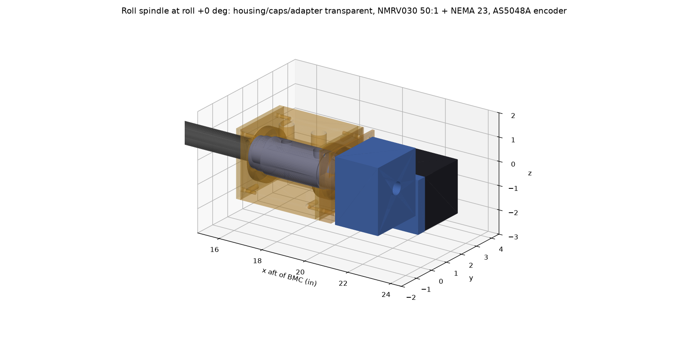
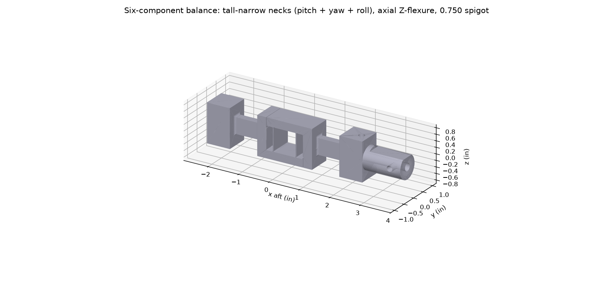

Motorized 6-component sting balance with roll, pitch and yaw
A complete design package for measuring the aerodynamic forces and moments on 3D-printed aircraft models in a university low-speed wind tunnel. The model sits on a strain-gauge balance at the tip of a sting; stepper motors pitch, roll and yaw it from a Raspberry Pi control station while the balance measures all six load components.





What the system is
The model attaches to a balance - a precisely machined aluminum bar whose thin sections strain under load. 24 strain gauges in 6 Wheatstone bridges turn those strains into voltages; a calibration converts the voltages into lift, drag, side force and pitching, yawing and rolling moments. The balance sits inside the model's pod and is held by a steel sting that runs downstream into a three-axis positioning mechanism outside the test section.
Goals
- Teaching-lab quality aerodynamic data (lift curves, drag polars, stability derivatives) on 3D-printed models.
- Remote, repeatable attitude control: roll ±90°, pitch -6° to +20°, yaw ±15°, all about the model's own centre.
- Buildable by a university shop and students; purchased parts where sensible (gearboxes, bearings, electronics).
- Documented, calibrated and safe: drawings with GD&T, a calibration procedure and software, interlocks.
Status at a glance
| Item | Status | Where |
|---|---|---|
| Requirements, loads, envelope analysis | Done | Requirements |
| 6-component balance design + CAD + drawing | Done | Balance |
| Model pod with pressure taps, model interface | Done | Models & pod |
| Roll spindle (±90°) CAD + 5 drawings | Done | Motion: roll |
| Motorized pitch sector CAD + 6 drawings | Done | Motion: pitch |
| Yaw carriage CAD (option B) + 6 drawings | Done; drawings preliminary (bay dims to confirm) | Motion: yaw |
| Calibration stand + fitting software | Done (6-component hardware CAD + fit software) | Calibration |
| Electronics design (wiring diagrams, pinouts, cables, parts list) | Done | Electronics & control |
| Control software (rig service, station GUI, data reduction) | To write | Software services |
| Project costs (JLCCNC + JLC3DP quotes, electronics, total) | Done | Project costs |
| GD&T drawings (36 sheets: 5 assemblies + balance, pod, roll, pitch, yaw, calibration parts) | REV A, unchecked | Drawings |
How to read this package
New to the project
Start with Requirements, then Balance and Motion system.
Building it
Go to the Implementation plan, the Drawings and the CAD files under References & files.
Why it looks like this
The Design history explains the options that were tried and dropped, and what the design reviews caught.
Glossary
| Term | Meaning |
|---|---|
| BMC | Balance moment centre - the reference point (x = 0) for loads and rotations; the model's wing quarter-chord goes here. |
| N, A, m | Normal force (lift direction), axial force (drag direction), pitching moment - in balance (body) axes. |
| Y, n, l | Side force, yawing moment, rolling moment. |
| FS | Full scale - the design load of each component (e.g. N = 25 lbf). |
| q | Dynamic pressure, ½ρV² (12.5 psf at 70 mph, 25.6 psf at 100 mph). |
| mV/V | Bridge output per volt of excitation; ~1 mV/V at full scale is the NASA design target. |
| Drag count | ΔCD = 0.0001. Drag accuracy on this site is quoted as ΔCD (e.g. 0.002 = 20 counts). |
| GD&T | Geometric dimensioning and tolerancing (ASME Y14.5) used on the drawings. |